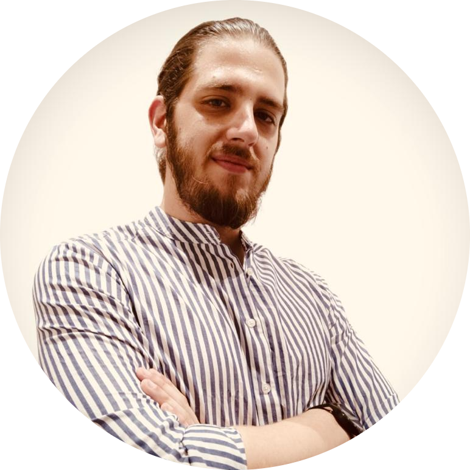

<div class="container-fluid">
    <div class="row row-main">
        <div class="container">
            <div class="row image-row">
                <div class="col-12 col-md-12 col-lg-12 col-xl-12 image">
                    
                </div>
            </div>
            <div class="row">
                <div class="col-12 col-xxl-6 text">
                    <h2 class="accent">{{ lang=='it' ? 'Chi sono' :  'Who am I' }}</h2>
                    <p>
                        {{ lang=='it' ? 'Dato che sei arrivato fin qua, mi sembra doveroso raccontarti un po\' di me…' 
                        : 'Since you\'ve made it this far, it seems appropriate to tell you a bit about myself...'}}
                        <br>
                        {{ lang=='it' ? 
                        'Mi chiamo Roberto, e so che fino ad oggi, fino a questo preciso momento, 
                        ho attraversato la vita con una strana affinità per l\'elettronica. 
                        Non so bene quando tutto abbia avuto inizio, forse quando ero un bambino
                        e mi sono imbattuto per la prima volta in quello che consideravo un affascinante ingranaggio
                        della modernità: le scale mobili. 
                        Guardavo quelle scale muoversi da sole, come se avessero una volontà propria, come se fossero
                        vive. Era magia.' 
                        : 
                        'My name is Roberto, and I know that until today, until this very moment, I have journeyed through life 
                        with a peculiar affinity for electronics.
                        I\'m not quite sure when it all began, perhaps when I was a child and stumbled upon 
                        what I deemed a fascinating piece of modernity: escalators.
                        I watched those escalators move on their own, as if they had a will of their own, as if they were 
                        alive. It was magic.'
                        }}
                        <br><br>
                        {{ lang=='it' ? 
                        'Era anche l\'inizio di un lungo viaggio che mi avrebbe portato dove sono ora. Ho seguito quella
                        passione, ho scelto la strada dell\'ingegneria elettronica. Le aule universitarie sono state il mio
                        luogo di studio, e la mia cameretta il mio laboratorio, un posto dove potevo dare libero sfogo alla
                        mia curiosità. Le notti insonni passate a creare e sperimentare sono diventate il mio rituale.'
                        : 
                        'It was also the beginning of a long journey that would lead me to where I am now.
                        I followed that passion, chose the path of electronic engineering. 
                        University classrooms became my study haven, and my room turned into my laboratory, a place where I could unleash
                        my curiosity.Sleepless nights spent creating and experimenting became my ritual.'}}
                        <br><br>
                        {{ lang=='it' ? 'Ma, come spesso accade, la vita ha modi strani di presentarti bivi inaspettati.
                        Il mio è stato leggere il nome di un esame che avrei dovuto sostenere per la magistrale proprio
                        mentre stavo consegnando la rinuncia agli studi… L\'internet delle cose.
                        Alla fine ho comunque lasciato l\'università: stavo lavorando come tecnical engineer per
                        un\'azienda di produzione elettronica e l\'impegno richiesto non mi avrebbe comunque permesso di
                        coltivare entrambe le cose.
                        Mi sono, però, comprato un libro: volevo capire cosa fosse l\'IoT, quali discipline tecniche comprendesse e quale filosofia sposasse..
                        Molto presto mi sono reso conto che le mie conoscenze erano parte di un puzzle più grande e dovevo trovare i pezzi mancanti.
                        Così, ho lasciato il mondo dell\'elettronica per cercarli immergendomi nell\'informatica, dalle basi allo sviluppo web.'
                        :
                        'However, as often happens, life has a strange way of presenting unexpected crossroads. 
                        Mine came in the form of reading the name of an exam I was supposed to take for my master\'s degree 
                        just as I was submitting my withdrawal from studies... The Internet of Things.
                        In the end, I did leave the university: I was working as a technical engineer for an electronics manufacturing company,
                        and the required commitment wouldn\'t have allowed me to pursue both paths.
                        However, I did buy a book: I wanted to understand what IoT was, what technical disciplines it encompassed, and what philosophy it embraced.
                        Soon enough, I realized that my knowledge was just a piece of a larger puzzle, and I needed to find the missing pieces.
                        So, I left the world of electronics to search for them, immersing myself in computer science, from the basics to web development.' }}

                        <br><br>
                        {{ lang=='it' ? 
                        'Ho iniziato realizzando un\'app per Android che parlasse con un Arduino Wifi, poi ho imparato nuovi linguaggi, 
                        fatto corsi di formazione intensivi e, in generale, dormito molto poco.
                        Sono diventato sviluppatore full stack e ora sento il richiamo di quella passione, quella che va
                        oltre i circuiti e le linee di codice. Quella che desidera, finalmente, comporre il puzzle.
                        Cercando un punto di incontro tra Futuro, Informatica e IoT ho trovato la Blockchain, gli oracoli e tutti gli ecosistemi che compongono questa rivoluzione tecnologica mondiale.'
                        : 
                        'I started by creating an Android app that communicated with a WiFi Arduino. Then I learned new languages, took intensive training courses, and, in general, slept very little.
                        I became a full-stack developer, and now I feel the call of that passion, the one that goes beyond circuits and lines of code. The one that finally wants to piece together the puzzle.
                        Looking for a meeting point between Future Informatics and IoT, I met Blockchain, oracles and all the ecosystems that make up this global technological revolution.' }}

                        <br><br>
                        {{ lang=='it' ? 
                        'Questi sono i motivi che mi spingono a specializzarmi nello sviluppo Blockchain: 
                        credo fermamente che il concetto dietro questa tecnologia abbia il potenziale per trasformare il tessuto stesso della società moderna.'
                        :
                        'These are the reasons that have currently driven me to specialize in Blockchain development: 
                        I firmly believe that the concept behind this technology has the potential to transform the very fabric of modern society.'}}
                    </p>
                </div>
                <div class="col-12 col-xxl-6 text">
                    <h2 class="accent">Mission</h2>
                    <p>
                        {{ lang=='it' ? 'Da Vinci sosteneva che ogni nostra conoscenza ha le sue radici nelle nostre percezioni. 
                        E io credo avesse pienamente ragione.'
                        : 
                        'Da Vinci believed that every bit of our knowledge has its roots in our perceptions. 
                        And I believe he was absolutely right.' }}
                        <br>
                        {{ lang=='it' ? 
                        'Come potrai dedurre dalle esperienze professionali che ho condiviso, la mia missione è guidata
                        da un profondo desiderio di apportare un impatto positivo all\'attuale trasformazione tecnologica.
                        Resto consapevole che la velocità della trasformazione a cui stiamo assistendo
                        possa creare timore e diffidenza, soprattutto se esacerbata dalla narrazione che ne fanno i
                        media: la tecnologia non rappresenta nè qualcosa da temere nè da ostacolare ma, piuttosto,
                        necessita di lucidità ed etica per essere modellata, direzionata e governata, in modo che sia
                        utile alla produzione e al sostentamento del bene sociale.' 
                        :
                        'As you can deduce from the professional experiences I\'ve shared, my mission is driven 
                        by a deep desire to make a positive impact on the current technological transformation.
                        I remain aware that the speed of the transformation we are witnessing can create fear and distrust, 
                        especially when exacerbated by the media\'s narrative. 
                        However, technology is neither something to fear nor hinder,
                        but rather requires clarity and ethics to be shaped, directed, and governed in a way that 
                        serves the production and sustenance of the common good.' }}
                        <br><br>
                        {{ lang=='it' ? 
                        'Il futuro che immagino prevede l\'adeguamento della tecnologia all\'umanità e non viceversa, un
                        futuro tecnologico in cui gli strumenti che utilizziamo non sono un\'imposizione, ma una naturale
                        estensione della realtà che viviamo. 
                        Un futuro in cui l\'ambiente in cui viviamo interagisce in armonia con le esigenze e abitudini umane. 
                        In questo scenario, la tecnologia diviene un alleato, non un tiranno. 
                        La sua presenza sarà discreta e ben integrata nella nostra vita quotidiana, fornendoci informazioni e supporto in modo non invasivo. 
                        
                        IoT, IA, Blockchain e Computer Quantistici potrebbero diventare i capostipiti della prossima rivoluzione digitale e 
                        la possibilità di perdere di vista l\'obiettivo principale della tecnologia è alle porte:
                        
                        Con il mio lavoro voglio poter aiutare le persone a cambiare il modo in cui percepiscono e sfruttano la tecnologia.
                        La mia missione è promuovere e far parte di questa rivoluzione, elevando aziende e privati ad un livello tecnologico successivo per mezzo di soluzioni professionali e all\'avanguardia.'
                        :
                        'The future I envision involves aligning technology with humanity, not the other way around.
                        A technological future where the tools we use aren\'t imposed but a natural extension of our reality.
                        A future where our environment harmoniously interacts with human needs and habits. In this scenario, technology becomes an ally, not a tyrant. 
                        Its presence will be subtle and seamlessly integrated into our daily lives, providing information and support without intrusion. 
                        IoT, AI, Blockchain and Quantum Computers could become the progenitors of the next digital revolution and
                        the possibility of losing sight of the main goal of technology is at hand:
                
                        With my work I want to be able to help people change the way they perceive and exploit technology.
                        My mission is to promote and be part of this revolution, elevating companies and individuals to a next technological level through professional and cutting-edge solutions.' }}

                        <br><br>
                        {{ lang=='it' ? 'Detto ciò, Forza Inter!': 'That being said, Forza Inter!' }}
                    </p>
                </div>
            </div>
        </div>
    </div>
</div>
